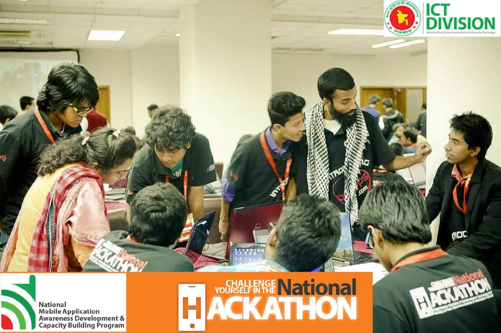

Results-driven IT professional with 10 years of experience specializing in computer networking, system installation, and IT operations. Proven track record of managing robust IT infrastructures at prestigious organizations like Apollo Imperial Hospital and A.K. Khan & Co. Ltd.

Designed and maintained 2,000+ IP/Analog cameras and 50+ channels of NVR/DVR systems.
Excellence in network design with 3,000+ nodes, VLANs, MikroTik, and Cisco hardware.
Proficient in managing data center operations using VMware vSphere and vCenter.
Configured and managed 200+ Meraki and high-density Wi-Fi Access Points (APs).
Designs, implements, and maintains network infrastructure and system hardware. Manages Routing, Switching, Meraki Wi-Fi AP, HIS, LIS, vSphere & vCenter, Surveillance Security, PA System, IP Telephony, Website, Data Center, and Firewalls.
Web Application Development. Handled servicing, assembling, and disassembling of Laptops, Desktops, Servers, and CCTV systems.
ERP Maintenance, Crystal Reports, installing and upgrading IT Systems, IT Inventory management, Surveillance security systems, and ISP infrastructure.
Servicing, assembling, and disassembling of Laptop, Desktop, Server, and CCTV hardware.
Chittagong Independent University (CIU) | 2024 - 2028 (Pursuing)
Empac College Of Technology | GPA: 3.64 / 4.00 (2010 - 2014)
Islamic University, Kushtia | GPA: 4.20 / 5.00 (2013 - 2015)
Islamic University, Kushtia | GPA: 3.75 / 5.00 (2009 - 2013)
MTCNA, MTCRE, MTCSE
Routing and Switching
IsDB-BISEW Training
Affiliated Member, SCITP (ID: SCITP-2024-0758)
Member, IDEB (ID: 54116)
467, SK. Mujib Road, Agrabad, Chattogram, Bangladesh.
+8801620182018, +8801923600427
omurmohammadfaruk@gmail.com